Come utilizzare questo strumento
Iniziare una nuova sessione
Dal cruscotto
Per avviare una nuova valutazione del rischio, dalla schermata iniziale o dal „cruscotto“ di OiRA, cliccare su „Avvia sessione“. Viene visualizzato un pannello di dialogo con due diverse opzioni per avviare la valutazione.
Avvio di una valutazione del rischio da zero
Utilizzare questa opzione per iniziare con un modello pulito quando si effettua la valutazione del rischio per la prima volta.
Basarsi su una valutazione del rischio esistente.
Utilizzare questa opzione se si è già effettuata una valutazione del rischio con un determinato strumento in precedenza. Si può selezionare una valutazione del rischio esistente che si vorrebbe riutilizzare dal menu a tendina dedicato alla valutazione del rischio, per utilizzarla come base per una nuova valutazione.
Quando si sceglie questa opzione viene creato un duplicato della precedente valutazione del rischio selezionata. Per impostazione predefinita, i duplicati delle valutazioni del rischio protette sono sbloccati.
Dalla pagina degli strumenti
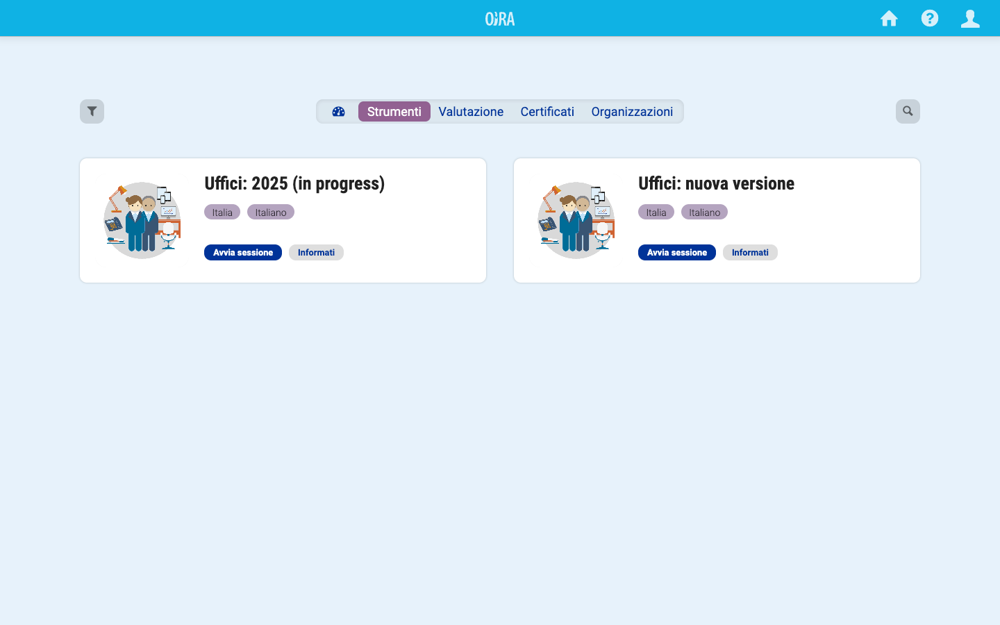
È inoltre possibile avviare una valutazione del rischio con uno strumento di propria scelta dalla pagina di sintesi degli strumenti e anche dalla singola pagina di uno strumento. Cliccare su „Avvia sessione“ per questa opzione. Attraverso questo percorso si può anche scegliere se iniziare da zero una nuova valutazione del rischio o basarla su una valutazione precedente. Solo le valutazioni del rischio effettuate con lo stesso strumento appariranno nel menù a tendina della valutazione. Se non si è mai effettuata una valutazione del rischio con lo strumento selezionato in precedenza, una nuova valutazione del rischio inizierà immediatamente quando si clicca su „Avvia sessione“.
Aprire una valutazione dei rischi
Dopo aver iniziato una valutazione dei rischi, la potrai recuperare in qualsiasi momento, cliccando sull’icona home, in alto a destra, attraverso il pannello di controllo, „Le valutazioni del rischio“. In questa sessione avrai anche la possibilità di iniziare una nuova valutazione dei rischi.
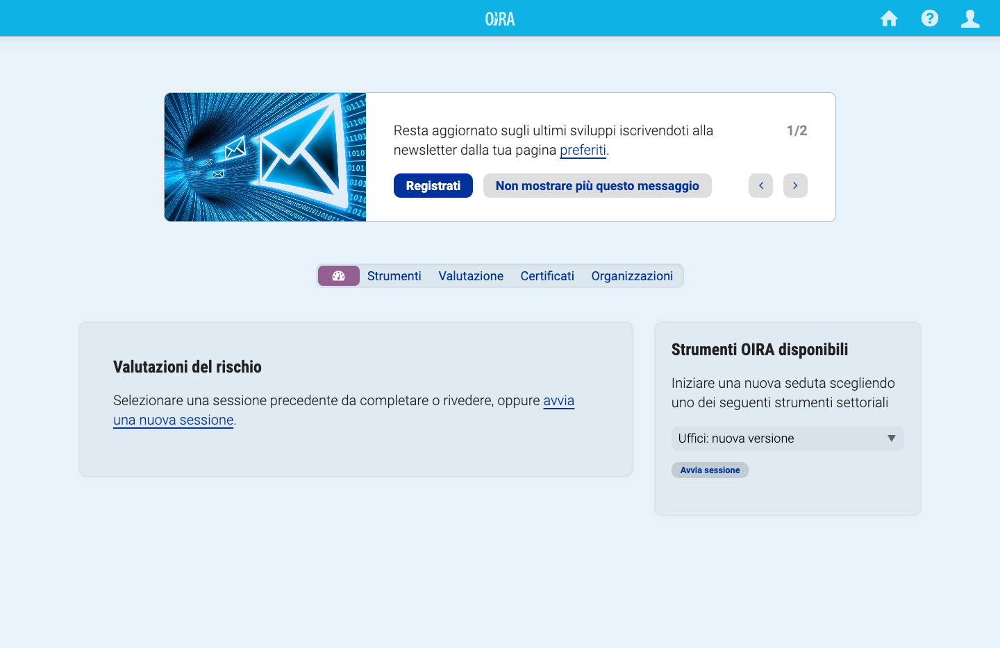
Navigare all’interno di una valutazione dei rischi
Ciascuna valutazione dei rischi ti guida attraverso varie fasi, che sono visibili nel menù principale sul lato sinistro della schermata:
- Presentazione
- Processo di VR
- Identificazione + Valutazione
- Misure di miglioramento
- Report
- Stato
La struttura di ciascuno strumento può variare a seconda delle decisioni adottate dai partner OiRA/dagli sviluppatori dello strumento. In alcuni strumenti, come quello italiano, la fase dell’individuazione e valutazione dei rischi comprende il piano d’azione. In questi casi il menù sulla sinistra è così configurato:
- Presentazione
- Processo di VR
- Valutazione
- Report
- Formazione
- Stato
Presentazione
„Presentazione“ è la fase in cui avvii ogni sessione/strumento. È qui che assegni alla valutazione dei rischi un nome che successivamente ti permetterà di distinguerla dalle varie altre valutazioni eseguite con lo strumento.
Dopo aver fatto clic su „Inizia“, potrebbe essere necessario rispondere ad alcune domande aggiuntive, a seconda dello strumento utilizzato. Questa schermata preparatoria con le „domande sul profilo“ compare soltanto negli strumenti dotati di tale opzione. Il tool uffici, al momento, non prevede la profilazione.
Le domande sul profilo permettono di:
- selezionare le affermazioni pertinenti per la tua attività imprenditoriale. Scegli „sì“ laddove appropriato.
- elencare una pluralità di unità aziendali, succursali, negozi ecc. I relativi rischi saranno ripetuti per ciascuna voce.
L’immagine seguente mostra, come apparirebbe la sezione qualora attivata, le domande mostrate nell’immagine sono solo a titolo esemplificativo e tratte dalla versione europea del tool.
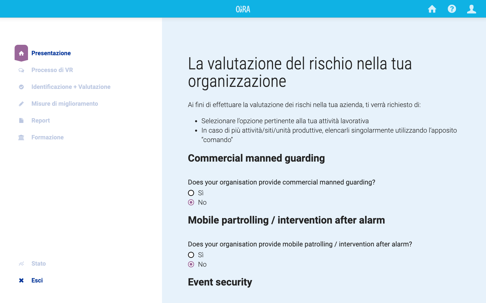
La fase della preparazione è molto importante perché definisce accuratamente il tipo di impresa e i rischi correlati che la tua azienda deve affrontare. Dopo aver fatto clic su „Salva e continua“, si passa alla successiva sezione, „Processo VR“. Nel tool italiano la sezione coinvolgimento non è prevista ma si passa direttamente alla fase della valutazione dei rischi.
Nota: non tutti gli strumenti prevedono domande sul profilo; in tali strumenti questa schermata viene saltata automaticamente.
Processo VR
Qui puoi scaricare o stampare i contenuti della valutazione dei rischi anche per condividerli con le figure del sistema di prevenzione e protezione.
Valutazione
In questa fase individuerai i pericoli e valuterai i rischi che sono rilevanti per la tua impresa.
Nota: Dato il modo in cui lo strumento è stato configurato in Italia, la fase di compilazione del Piano di miglioramento (cfr. più avanti) è stata integrata in questa schermata. L’intera fase è denominata „Valutazione“ e gli elementi descritti nel „Programma di miglioramento“ appariranno nella sezione relativa all’individuazione e valutazione di ciascun rischio.
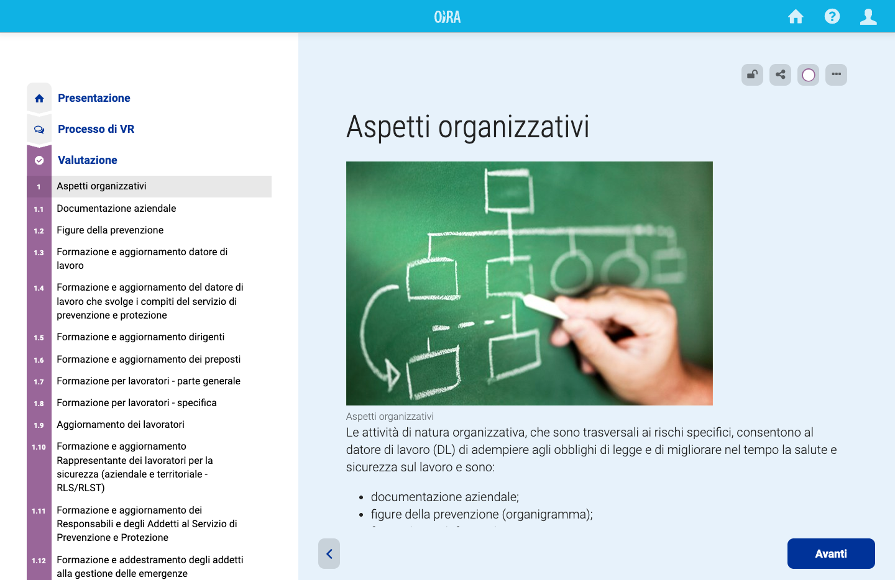
Sul lato sinistro dello schermo, nella sezione „Valutazione“, sono visualizzati tutti gli argomenti/moduli inclusi nello strumento. L’argomento che stai visualizzando è evidenziato.
Nella fase “Valutazione”, per ciascun rischio o adempimento è possibile selezionare le misure obbligatorie o di miglioramento già attuate. Per la corretta gestione del rischio o adempimento è necessario aver attuato tutte le misure obbligatorie applicabili all’ufficio oggetto della valutazione. Inoltre, è richiesto di indicare se per lo specifico rischio o adempimento sono previste ulteriori misure da inserire nel programma di miglioramento; per i rischi per i quali sono state previste misure di miglioramento, alla selezione della risposta, apparirà un elenco da cui sarà possibile selezionare quelle precompilate, se presenti, oppure aggiungerne ex novo.
Per ciascun rischio devi decidere se l’affermazione che descrive uno stato desiderato sia applicabile alla tua impresa. Puoi rispondere come segue:
- No. Il rischio è gestito con le misure già adottate e non sono previste ulteriori misure di miglioramento
- Si. Il rischio è gestito con le misure già adottate e sono previste ulteriori misure di miglioramento
Sotto ciascuna affermazione sono abitualmente riportate informazioni supplementari sul rischio specifico:
- informazioni: una breve descrizione, talvolta corredata di immagini accompagnatorie, che fornisce maggiori dettagli sul rischio.
- appunti: puoi inserire qui le tue osservazioni, che compariranno nel DVR, in nel report allo specifico rischio dove sono state inserite.
- risorse: informazioni aggiuntive sul rischio, ad esempio riferimenti giuridici. Qualche volta sono allegati anche documenti di approfondimento.
Dopo aver risposto ad un’affermazione su un rischio e proseguendo nel procedimento, il menù sulla sinistra verrà aggiornato con un simbolo colorato che indicherà:
- non esaminato (segno di spunta grigio)
- adempimenti e rischi da completare (segno di spunta giallo)
- adempimenti/rischi non appplicabili o per i quali non sono previste ulteriori misure di miglioramento (segno di spunta verde)
- adempimenti/rischi per i quali non sono previste ulteriori misure di miglioramento (segno di spunta rosso)
Nel caso delle domande prive di risposta rimane il simbolo grigio.
In questa fase, in alcuni strumenti e per alcuni rischi, potrebbe essere richiesto di assegnare una priorità d’azione al rischio che hai valutato.
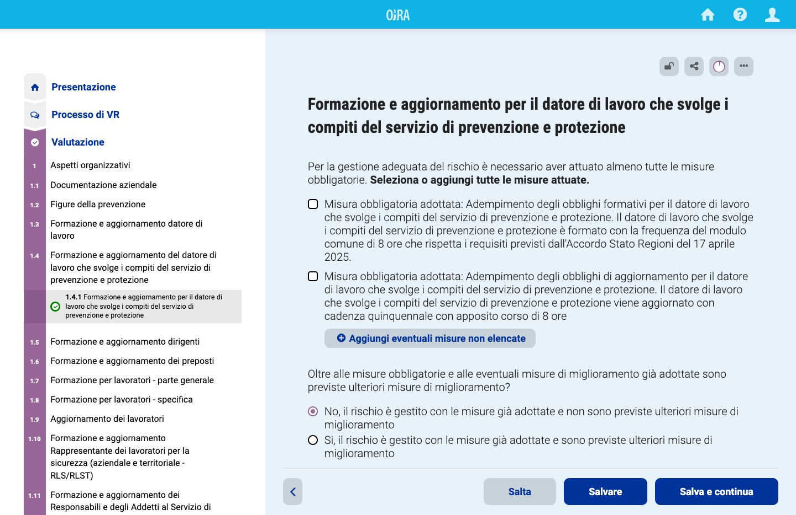
Nota: in alcuni strumenti OiRA la valutazione non è visualizzata. La visualizzazione dipende dal modo in cui il partner/lo sviluppatore dello strumento OiRA nazionale ha impostato quel particolare strumento OiRA.
A seconda del metodo di valutazione impostato per ciascun rischio ti verrà chiesto di:
- stimare la priorità: alta, media o bassa
OPPURE
- rispondere ad alcune domande sulla frequenza, la gravità e la probabilità del rischio, per poter determinare la priorità sulla scorta delle tue risposte
Rischi prioritari:
alcuni rischi sono considerati molto importanti dal partner/dallo sviluppatore dello strumento nazionale che ha creato quello specifico strumento OiRA. Non è necessario pertanto stimare i „rischi prioritari“ perché la loro priorità sarà automaticamente impostata come „alta“.
Dopo aver finito di rispondere a tutti i punti relativi ai rischi nella sezione „Valutazione“, giungerai al punto opzionale „Rischi aggiuntivi“. Qui puoi creare le tue voci personalizzate utilizzando il pulsante „Aggiungi un rischio“.
Se lo strumento non contempla rischi che sono presenti sul tuo luogo di lavoro/nella tua impresa, devi aggiungerli qua. Questi rischi possono essere integralmente definiti da te.
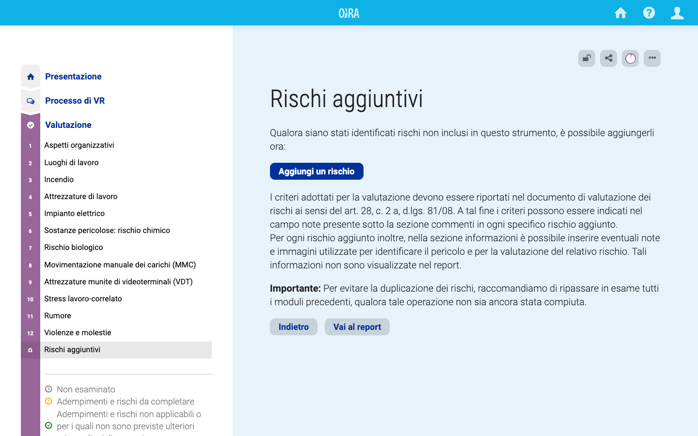
Un „rischio aggiuntivo“ funziona in maniera analoga ai rischi contemplati dallo strumento OiRA, ma ovviamente devi redigere tu il relativo testo, che dovrebbe consistere perlomeno in una breve affermazione che descriva una situazione problematica, con l’opzione di una descrizione più ampia. Puoi anche caricare un’immagine per illustrare una determinata situazione.
Come nel caso dei rischi abituali, devi dichiarare se il rischio è gestito oppure no. Questo permetterà di gestire i rischi efficacemente secondo le misure che avrai adottato e che appariranno nel report.
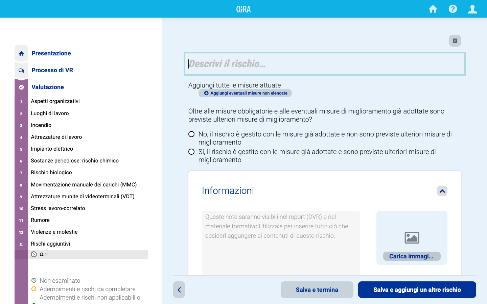
Misure di miglioramento
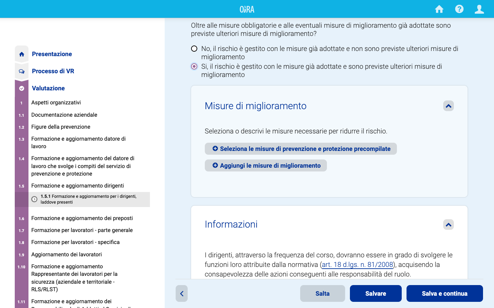
Se in un modulo rispondi con un „si, il rischio è gestito con le miure già adottate e sono previste ulteriori misure di miglioramento“, sulla pagina si apre un box dove è possibile selezionare una o più misura tra quelle proposte o inserirne di nuove.
Programma di miglioramento separato
Nel caso in fase di sviluppo del tool il Programma di miglioramento è stato previsto come una fase separata, questo sarà accessibile utilizzando le opzioni del menu sul lato sinistro.
Fai clic sul pulsante „Crea un programma di miglioramento“ per iniziare il tuo piano.
Il menù sulla sinistra mostra ora soltanto i rischi che necessitano ulteriori azioni, poiché gli altri rischi sono stati indicati come correttamente gestiti e senza previsione di ulteriori misure di miglioramento.
Per ciascun rischio al quale hai risposto che sono previste ulteriori misure di miglioramento durante la fase di valutazione e per i rischi ti verrà chiesto di definire tali misure.
Puoi selezionare misure tra quelle suggerite nell’elenco del sistema oppure definire le tue misure personali.
Aggiungi la tua misura
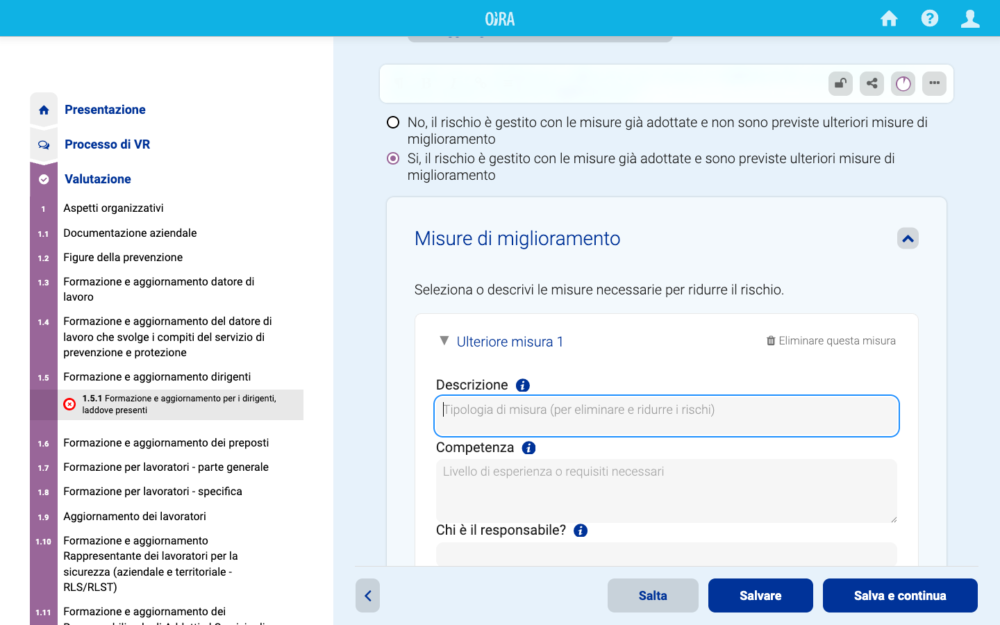
Usa il pulsante „Aggiungi le misure di miglioramento“ per cominciare a definire una misura preventiva. Qui dovresti:
- descrivere l’approccio generale che sarà adottato per eliminare o ridurre il rischio.
- indicare, facoltativamente, il livello di competenze e/o i requisiti necessari (ad esempio, puoi indicare qui se per gestire questo rischio sono richieste una formazione specifica o competenze esterne).
- inserire informazioni sui soggetti responsabili dell’esecuzione.
- stabilire la dotazione finanziaria, se applicabile.
- fissare, facoltativamente, le date previste per l’inizio dell’esecuzione della misura e per il suo completamento.
Puoi aggiungere tutte le misure necessarie.
Aggiungi misuredi prevenzione e protezione precompilate
A seconda dell’impostazione applicata dal partner OiRA/dallo sviluppatore dello strumento, sono disponibili misure predefinite per i rischi individuali. Puoi scegliere una o più misure predefinite facendo clic sul pulsante „Seleziona misuredi prevenzione e protezione precompilate“.
Si aprirà un menù pop-up contenente tutte le misure suggerite. Fai clic sul pulsante „Aggiungi“ in corrispondenza di quelle che intendi utilizzare.
Le misure predefinite vengono poi elencate nel tuo programma di miglioramento. La descrizione delle cose da fare è prestabilita, mentre gli altri campi (responsabilità, dotazione finanziaria, date) possono e dovrebbero essere compilati da te.
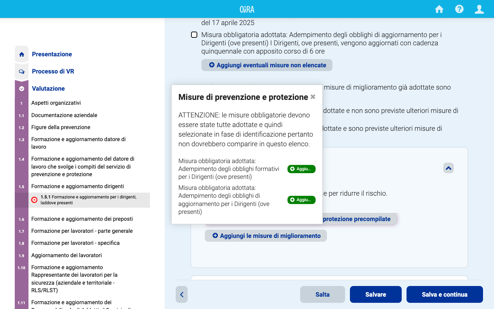
Sia le misure standard sia quelle definite da te possono essere cancellate in qualsiasi momento.
Formazione
La funzione „Formazione“ è stata ideata per aiutare l’utente a generare contenuti formativi durante l’esecuzione di una valutazione del rischio. Le seguenti istruzioni ti guideranno su come utilizzare al meglio questa funzionalità:
Creazione automatica di materiale formativo
Il sistema compila automaticamente materiale formativo durante la valutazione del rischio garantendo che ogni valutazione del rischio sia abbinata a risorse formative corrispondenti.
Redazione del materiale formativo
All’interno della sezione dedicata alla formazione per ogni rischio sono elencate tutte le relative misure. Ogni misura può essere contrassegnata come materiale pertinente per la formazione dei propri colleghi o dipendenti. Per selezionare o deselezionare una misura da mostrare o meno nel materiale didattico, fare clic sull’icona dell’occhio adiacente a ciascuna misura visualizzata nella funzione modifica di ciascun modulo o sottomodulo (icona pennetta in alto a destra). Per impostazione predefinita tutte le misure sono incluse nel materiale formativo.
Il materiale formativo include i seguenti elementi:
- Misure già attuate: si tratta delle misure preventive che sono già state messe in atto per mitigare il rischio.
- Misure di miglioramento: si tratta di eventuali misure di prevenzione aggiuntive che sono state scelte per gestire il rischio.
- Sezione informazioni: le informazioni associate a ciascun rischio che forniscono dettagli sulla sua natura e sui potenziali impatti.
- Note: se vi sono note relative a un rischio specifico, queste possono essere facoltativamente incluse nel materiale di formazione per fornire ulteriore contesto o approfondimenti.
Scegliendo le misure corrispondenti si può garantire un’esperienza di formazione personalizzata per i propri dipendenti.
Report
Nella sezione Report, prima di scaricare il documento in formato word, se desideri inserire un’osservazione generale riguardo la valutazione dei rischi, puoi digitare il testo nell’apposito box e salvalo.
Se desideri formulare un’osservazione da includere nel report, digita il testo qui e salvalo.
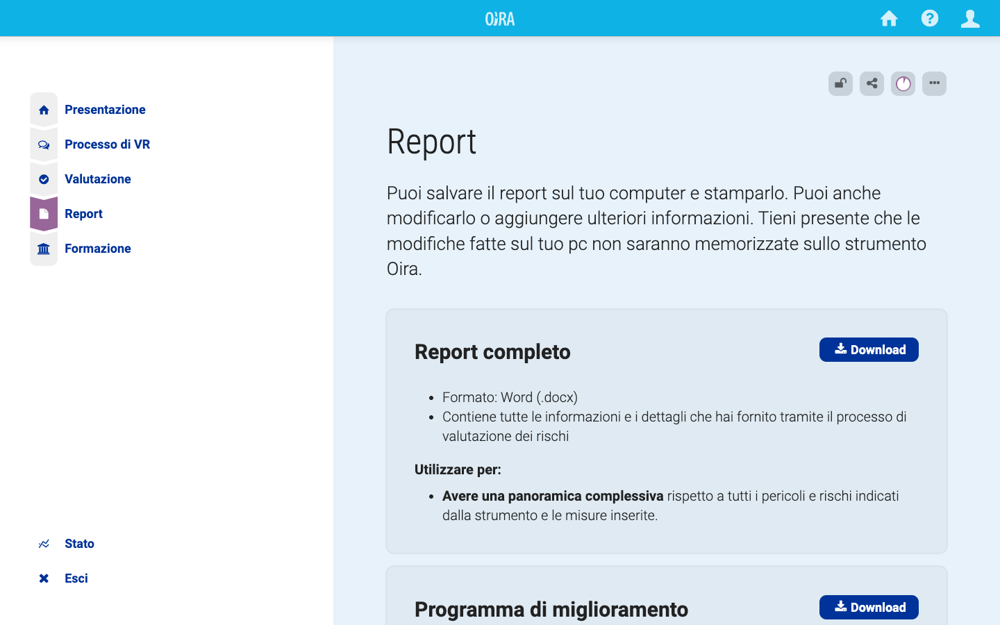
Stato
Il piccolo diagramma circolare nel menù in alto a destra mostra lo stato di avanzamento nell’utilizzo dello strumento.
La sezione dello stato offre una panoramica di quanti rischi hai individuato, quanti di essi hai affrontato mediante la definizione di misure e a quanti rischi non hai ancora valutato.
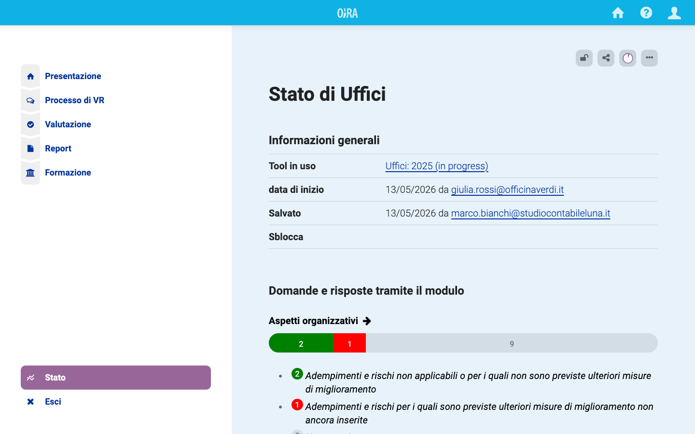
Quando accedi alla schermata dello stato puoi vedere lo stato di avanzamento in ciascun modulo. In questo modo potrai vedere dove devi ancora valutare i rischi o indicare le misure per affrontare i rischi individuati.
Selezionare una valutazione del rischio
Se si è raggiunta una fase in cui la valutazione del rischio è considerata definitiva, potrebbe essere utile comunicarlo al resto dell’organizzazione. Uno dei modi per farlo nello strumento è bloccare la valutazione del rischio. Seguire i passaggi in appresso per bloccare una valutazione del rischio:
- Aprire una valutazione del rischio, assicurandosi che sia attiva su qualsiasi pagina che non sia „Formazione“ o „Impostazioni“.
- Sulla barra degli strumenti, fare clic sull’icona del blocco .
- Apparirà un menu. Da questo menu selezionare „Blocco della valutazione del rischio“.
Una volta completate queste fasi, la valutazione del rischio viene immediatamente bloccata e resa visibile dall’icona di blocco che ora appare come chiusa .